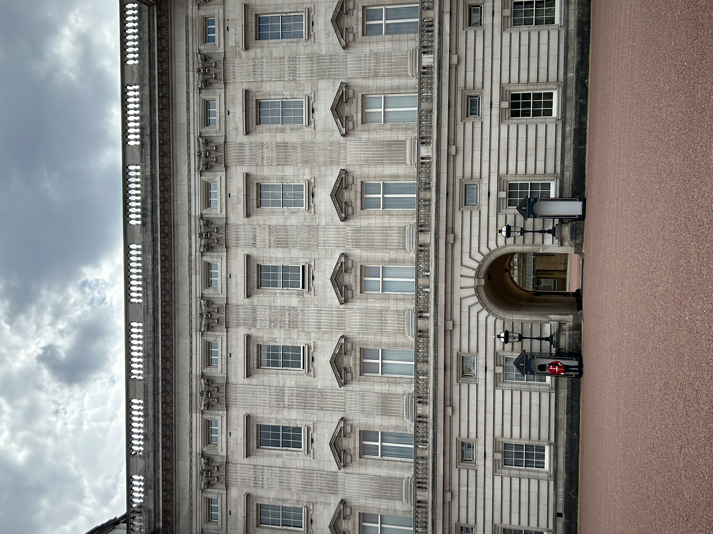

Wonders of London
Exploring the City's Legendary Sights


In London's streets where legends tread,
Big Ben's chime and history's thread.
From bustling markets to the Thames'grace,
A city's heart in every place.
Exploring the City's Legendary Sights
London is the vibrant capital of the UK, a blend of historic charm and modern energy. From the majestic Big Ben to the grandeur of Buckingham Palace, every corner tells a story. The city's multicultural atmosphere is reflected in its diverse cuisines—indulge in anything from classic fish and chips to global delicacies in Borough Market. London's weather can be unpredictable, with summers mild and winters chilly, but its beauty shines all year round.
My Experience: London swept me off my feet with its grandeur. I wandered through Covent Garden, admiring street performers, and soaked in history at the British Museum. Walking along the Thames River at sunset, with the London Eye glowing in the distance, was truly magical. My favorite memory? Sitting in Hyde Park, sipping coffee as the city buzzed around me—a perfect blend of tranquility and excitement.
Amazing Facts: London is home to over 170 museums, including the world-famous British Museum and the Natural History Museum.
The London Underground, affectionately called "The Tube," is the oldest underground railway network in the world, opening in 1863.
"To travel is to discover that everyone is wrong about other countries."
- Aldous Huxley